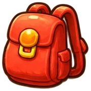
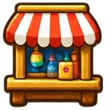
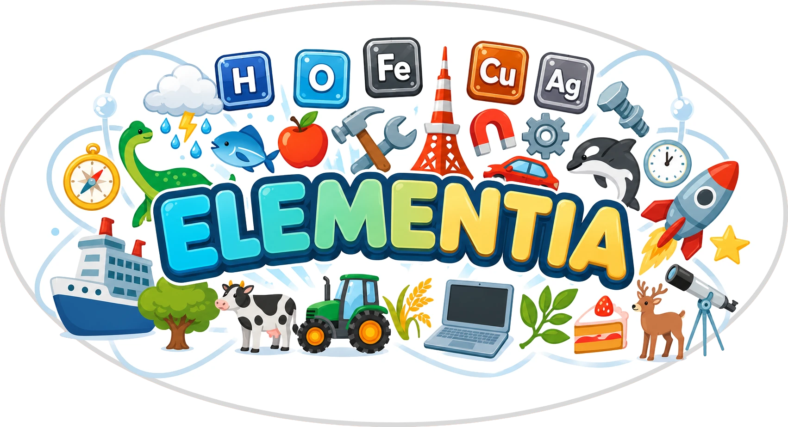

You can focus on one item at a time from your 📌 list by tracking it with the 🔍.
HINT: Try pinning and tracking smaller components of larger items!
Past runs on this device, most recent first. Tap a run to see its turn-by-turn log.
The periodic table lists every element in the universe. Just 16 of them make up nearly everything you'll see and craft in Elementia.
Tap a station to play its mini-game.